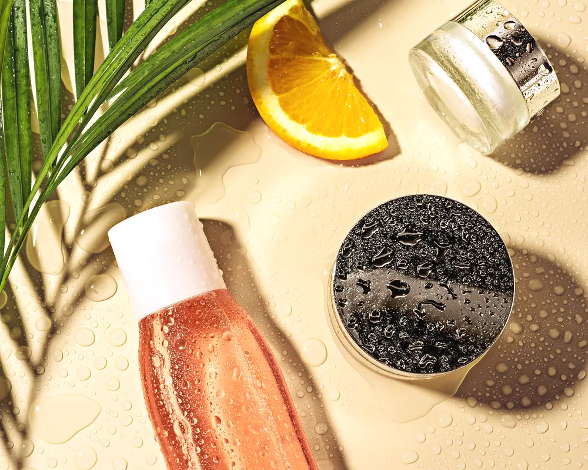

Microneedling Aftercare Done Right: The First 72 Hours
The treatment is only half the story. What you do in the days afterward decides how good your results turn out and how quickly your skin bounces back. Aftercare is not an afterthought, it is where a lot of the outcome actually happens.

Microneedling works by creating tiny controlled micro-injuries that trigger your skin to repair and rebuild collagen. Right after, your skin is doing important work and is more open and vulnerable than usual. Treat those first few days with a bit of care and you get the best of what the treatment can offer. Here is the plain guide.
The first day
Immediately after, your skin will look like a mild to moderate sunburn. Red, warm, maybe a little tight. This is normal and expected. The single best thing you can do on day one is keep it simple and leave your skin alone.
Most providers advise no makeup for the first day, gentle cleansing only, and hands off your face. Your skin has tiny channels that are settling and closing, and piling products or makeup on top of that is asking for irritation. Let it breathe and recover.
Cleansing and moisture
When you do cleanse, be gentle. Lukewarm water, a mild cleanser, and soft hands. No scrubbing, no exfoliating, no active ingredients like retinoids or strong acids for a few days. Those are great in your normal routine and too harsh for freshly treated skin.
Keep the skin hydrated with whatever your provider recommended. A simple, soothing moisturizer helps your barrier recover and eases that tight feeling. This is not the moment for a shelf of fancy products. Calm and minimal wins.
Sun protection is non-negotiable
Fresh skin after microneedling is especially sensitive to the sun, and unprotected exposure now can cause discoloration that undoes your results. Stay out of direct sun as much as you can for the first days. Once your provider clears you to apply sunscreen, wear it daily without fail. This one habit protects the whole investment.
What is normal and what is not
Some things surprise first-timers even though they are completely normal:
- Redness that fades over a day or two, sometimes a bit longer for deeper sessions
- A tight, dry feeling as the skin recovers
- Light flaking or peeling a few days later as skin turns over
- A temporary rough texture before the smoothness sets in
What is not normal is worsening pain, spreading redness, swelling that grows instead of shrinks, or any sign of infection. If something feels genuinely wrong, contact your provider promptly. Good clinics would much rather you call than tough it out.
The bigger picture
Remember that microneedling rewards patience and usually a series. One session helps, but a course of a few treatments spaced several weeks apart is what tends to deliver the results people are really after. Good aftercare between each session keeps your skin healthy enough to keep responding well. If you want a clear picture of how a proper course is structured and spaced, this rundown on microneedling in Los Angeles lays out what to expect from a full series and the aftercare a clinic will guide you through.
A simple 72-hour summary
If you want the whole thing in a nutshell: be gentle, stay out of the sun, skip the actives and the sweat, keep it hydrated, and leave your skin alone to do its repair work. Resist the urge to pick at any flaking, because that is how you end up with marks that linger.
Aftercare is not glamorous, but it is honestly where a lot of great results are made or lost. Follow your provider's specific instructions closely, since they know exactly what device and depth they used. Give your skin those first few careful days and it will reward you with the smooth, fresh result you paid for.